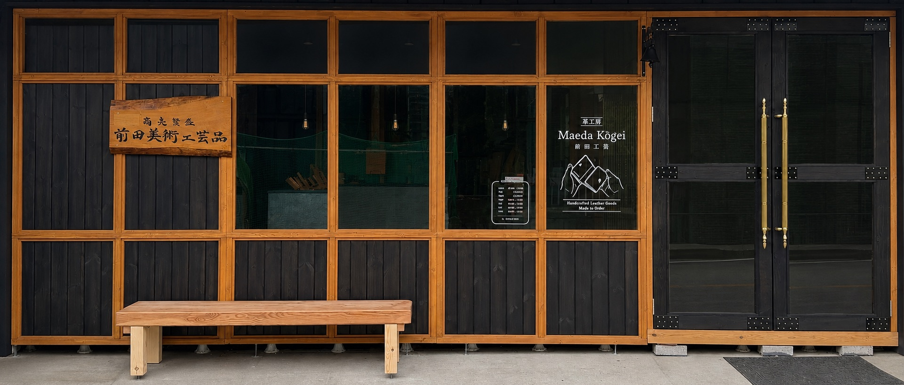

01
BUTTERO
ブッテーロ
透明感のある発色と、力強い経年変化。
最初はハリのある質感を持ちながら、使い込むほど艶が増し、色が深くなっていく革。傷や手の油分も少しずつ馴染み、その人だけの表情へ変化していきます。
About
前田工芸 — 山梨県富士吉田市
Brand
前田工芸は、山梨県富士吉田市にある革製品の工房です。 イタリア・トスカーナ地方でつくられた植物タンニン鞣し革（ヌメ革）を中心に、財布やキーケース、革小物を一つひとつ仕立てています。
革の表情、手縫いのステッチ、使うほどに深まる色艶。 新品の美しさに、その人が過ごした時間の表情が重なっていく革製品をつくっています。
Three Leathers
表情も、手触りも、育ち方も異なる三つの革。
01
BUTTERO
透明感のある発色と、力強い経年変化。
最初はハリのある質感を持ちながら、使い込むほど艶が増し、色が深くなっていく革。傷や手の油分も少しずつ馴染み、その人だけの表情へ変化していきます。
02
MINERVA BOX
柔らかなシボと、しっとりとした手触り。
自然なシボを持ち、オイルを豊富に含んだしなやかな革。使い始めから手に馴染みやすく、年月とともに艶と色の深みが増していきます。
03
PUEBLO
独特の毛羽立ちから生まれる、劇的な変化。
表面をあえて荒らした独特の質感が特徴。使い始めはマットでざらりとしていますが、摩擦によって次第に毛羽が寝て、驚くほど艶やかな表情へ変わります。
Vachetta & Aging
前田工芸で使用している革は、バケッタ製法によってつくられたイタリアンレザーです。 革に含まれたオイルは、使い込むほどに艶を増し、色を深め、少しずつその人だけの表情へと変化していきます。
ポケットに入れれば丸みを帯び、日々の使い方によって傷や色の変化が重なります。 それは単なる劣化ではなく、使う人の生活が革に刻まれていく過程です。
仕立てた日から、革の新しい時間が始まります。
使う人と過ごすほどに色艶を深め、その人だけの表情へ育っていきます。
Hand Stitch
前田工芸の革製品は、一つひとつ手作業で仕上げています。 手縫いによって生まれる美しいステッチラインは、前田工芸の革製品を象徴する特徴のひとつです。


From Fujiyoshida
富士山の麓、山梨県富士吉田市。前田工芸の革製品は、この地にある小さな工房で生まれています。 店頭に並ぶ革製品は、すぐ奥にある工房で製作しています。
型紙製作、裁断、革漉き、コバの仕上げ、穴あけ、縫製、仕上げまで。 一つひとつ手をかけながら形にしていきます。



Beginning
12歳の頃、経年変化していくヌメ革に惹かれたことが、ものづくりの始まりでした。 革の香りや、手を動かす感覚が心地よく、気が付けば時間を忘れていました。
今も、使う人の暮らしが傷や色の変化として重なり、その人だけのものになっていく過程に惹かれています。 つくった日だけでなく、その先の時間まで楽しめるものを届けたいと考えています。